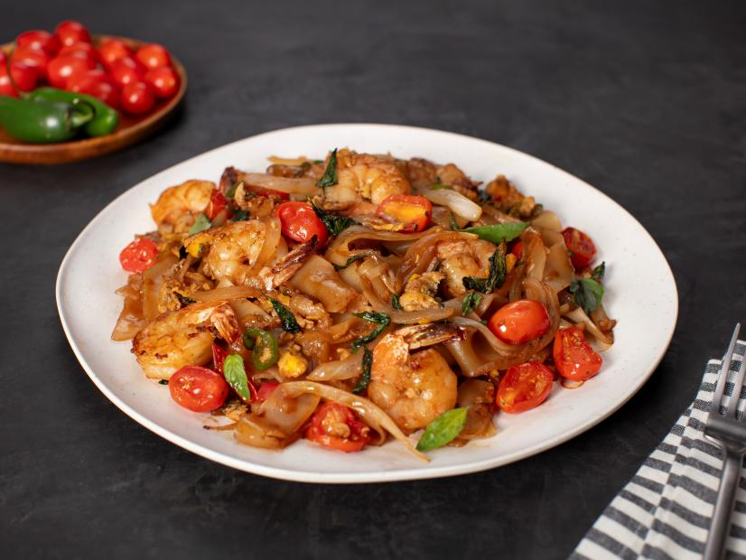

Drunken Noodles Recipe

Recipe Courtesy of Jet Tila
This recipe was shared with me by aunt. It's borrowed from Jet Tila's recipe article from The Food Network.
Famous for being a late night drinking dish, Drunken Noodles is a marriage between my Thai and Chinese roots. The sauce seems complicated, but it’s as simple as measuring and dumping in a bowl. Fresh rice noodles are a deli item at most Asian markets. They are made and delivered fresh daily to the markets. It’s best to buy and use them within 48 hours. A way to tell if they are fresh is just to take the pack and fold it like a towel. If you can fold until the ends touch and the middles aren’t cracking, that’s a sign of freshness.
Ingredients
- 2 table spoons sweet soy sauce
- 1 tabke spoon oyster sauce
- 1.5 tablespoons fish sauce
- 1 tablespoon sugar
- 1 teaspoon siracha
- 1 teaspoon minced garlic
- 6 to 8 thai basil leaves
- 3 tablespoons canola or peanut oil
- 2 to 3 cloves garlic, minced
- 2 large eggs
- 1 to 2 serrano chiles, thinly sliced
- 6 to 8 large shrimp, peeled and deveined
- 1/2 medium white onion, sliced
- 4 cups fresh rice noodles, separated
- 1 cup Thai basil leaves, loosely packed
- 1/2 cup grape tomatoes, halved
Steps
- Make sauce: Combine all of the ingredients in a small bowl. Set aside.
- Prepare noodles: In a large saute pan, heat the oil over high heat. When you see a wisp of white smoke, add the garlic and cook, stirring, until light brown.
- Add the eggs and serrano chiles and cook, stirring, until the eggs are lightly scrambled and barely set, about 1 minute.
- Add the shrimp and onion, folding constantly until the shrimp turn pink, about 1 minute.
- Add the noodles, basil, tomatoes and sauce and toss to combine for about 3 minutes. Don't be scared to scrape the bits off the bottom before they burn. Cook for 1 additional minute until the noodles are cooked and coated well. Serve hot.